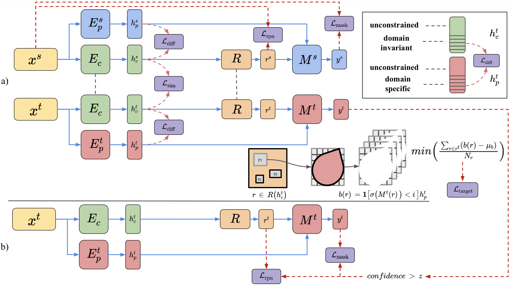

DARCNN: Domain Adaptive Region-based Convolutional Neural Network for Unsupervised Instance Segmentation in Biomedical Images
CVPR 2021

Abstract
In the biomedical domain, there is an abundance of dense, complex data where objects of interest may be challenging to detect or constrained by limits of human knowledge. Labelled domain specific datasets for supervised tasks are often expensive to obtain, and furthermore discovery of novel distinct objects may be desirable for unbiased scientific discovery. Therefore, we propose leveraging the wealth of annotations in benchmark computer vision datasets to conduct unsupervised instance segmentation for diverse biomedical datasets. The key obstacle is thus overcoming the large domain shift from common to biomedical images. We propose a Domain Adaptive Region-based Convolutional Neural Network (DARCNN), that adapts knowledge of object definition from COCO, a large labelled vision dataset, to multiple biomedical datasets. We introduce a domain separation module, a self-supervised background representation consistency loss, and an augmented pseudo-labelling stage within DARCNN to effectively perform domain adaptation across such large domain shifts. We showcase DARCNN's performance for unsupervised instance segmentation on numerous biomedical datasets.
Code release
We release code for DARCNN here.